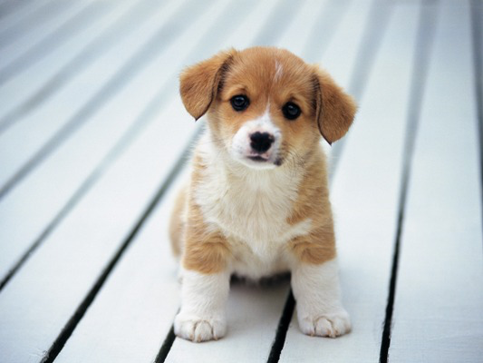

Puppy writeup
Introduction
Quelqu'un sur irc hier a proposé un petit challenge de steganographie pas méchant. La victime du jour ? Un chiot qui renferme, nous dit-on, des secrets.
puppy.png
À la recherche d'un texte caché
Les deux formes les plus courantes d'information cachées dans une image sont:
Du texte sous forme de commentaire ou autre
Une autre image
Commençons par le texte. L'utilitaire strings permet de récupérer les chaines de caractère présentes dans un binaire. La plupart sont le fruit de coïncidences mais s'il y a du texte légitime non chiffré on devrait pouvoir le retrouver.
$ strings puppy.png
IHDR
sRGB
...
)2DE2b
__MACOSX/UX
__MACOSX/Secret/UX
__MACOSX/Secret/._skull.jpgUX
cg`b`
100.
20h&
QRR`
L_7?
KMS\
Secret/Untitled.rtfUX
__MACOSX/Secret/._Untitled.rtfUX
cg`b`
2+0tA
Secret/UX
Secret/skull.jpgUX
__MACOSX/UX
__MACOSX/Secret/UX
__MACOSX/Secret/._skull.jpgUX
Secret/Untitled.rtfUX
__MACOSX/Secret/._Untitled.rtfUXVisiblement ça n'a pas été inutile, on voit clairement des chemins de fichiers présents dans l'image, et il semble que celle-ci ai été faite avec un mac. On dirait que tout les chemins finissent par UX... Cela s'expliquera sans doute par la suite. Avant cela, récupéront une liste plus propre:
$ strings puppy.png | grep -e Secret -e MACOS
Secret/UX
Secret/skull.jpgUX
__MACOSX/UX
__MACOSX/Secret/UX
__MACOSX/Secret/._skull.jpgUX
Secret/Untitled.rtfUX
__MACOSX/Secret/._Untitled.rtfUX
Secret/UX
Secret/skull.jpgUX
__MACOSX/UX
__MACOSX/Secret/UX
__MACOSX/Secret/._skull.jpgUX
Secret/Untitled.rtfUX
__MACOSX/Secret/._Untitled.rtfUXÀ la recherche d'un fichier caché
Regardons la liste de fichier que l'on a trouvé (moins les UX qui ne semblent pas en faire partie au regard des extensions que l'on identifie).
__MACOSX/ __MACOSX/ __MACOSX/Secret/ __MACOSX/Secret/ __MACOSX/Secret/._skull.jpg __MACOSX/Secret/._skull.jpg __MACOSX/Secret/._Untitled.rtf __MACOSX/Secret/._Untitled.rtf Secret/ Secret/Untitled.rtf Secret/Untitled.rtf Secret/skull.jpg
Qu'est-ce qui pourrait motiver le fait d'avoir les différents noms de fichiers et même de dossier ? Qu'est-ce qui a besoin de toute une structure de fichier comme ça ? Peut-être un système de fichier. Ça pourrait être une partition cachée qu'il faudrait extraire et monter... Ou alors une archive, qu'il faudrait extraire et décompresser.
Il y a différents moyens de savoir, on se base généralement sur des calculs d'entropie (l'idée étant qu'un fichier compressée va avoir une entropie proche de 8 bits par octet alors que du texte non compressé en aura une plus faible) mais c'est ici inutile. En effet, on voit que l'on cherche un fichier jpg et un fichier rtf.
Le format RTF est un format textuel, donc si son contenu n'apparait pas dans strings c'est qu'il est compressé. Ça pourrait être une archive compressée dans un système de fichier, mais dans ce cas le nom de l'archive serait visible parmi les fichiers trouvé et ce n'est pas le cas.
On est donc à la recherche d'une archive contenant une image et un texte.
À la recherche de l'archive cachée
Nous devons identifier l'archive parmi les informations binaires de l'image et l'en séparer. Le soucis est que l'on ne sait pas où elle se trouve ni de quel type d'archive il s'agit (tar.gz, zip, tar.bz2, ax, xz, 7z...).
Mais chaque chose en son temps : commençons par trouver ce fichier. Ici j'ai continué l'analyse en utilisant l'outil de reverse engineering radare2. Cependant j'aimerais montrer qu'il est possible de le faire avec des outils plus communs. En contrepartie ça ne sera pas forcément aussi agréable qu'avec des outils spécifiques.
Si l'on reprend le résultat original de strings on voit que le premier nom de fichier était Secret/. Cherchons où il se trouve. strings peut donner les offsets des résultats avec --radix=x.
$ strings --radix=x puppy.png | grep Secret/ | head -1
3d04d Secret/UXAllons voir ce qui se trouve du côté de l'offset 0x3d04d du coup :
On peut utiliser hexdump ou xxd (qui vient avec vim) pour obtenir une représentation mi-hexadécimale, mi-ascii du contenu du fichier. Je vais utiliser xxd ici.
$ xxd puppy.png | head
00000000: 8950 4e47 0d0a 1a0a 0000 000d 4948 4452 .PNG........IHDR
00000010: 0000 0215 0000 0190 0802 0000 0096 1305 ................
00000020: df00 0000 0173 5247 4200 aece 1ce9 0000 .....sRGB.......
00000030: 0009 7048 5973 0000 0b13 0000 0b13 0100 ..pHYs..........
00000040: 9a9c 1800 0040 0049 4441 5478 018c bd09 .....@.IDATx....
00000050: 9264 3b92 5de9 5344 fe4c 9242 11ee ba17 .d;.].SD.L.B....
00000060: d04b e8d5 b548 8b90 95ac fae1 639f 7b0f .K...H......c.{.
00000070: a00f 661e 3f8b 1a1e 3085 8e17 0a3c bcc1 ..f.?...0....<..
00000080: ccdc 1fff afff fbff 797e 7e7e 7878 f80c ........y~~~xx..
00000090: bdc3 3c3e 3e7e 7d7d 3d7e 7e3d 3d3d d185 ..<>>~}}=~~===..On veut les lignes autour de notre offset, en sachant que ces derniers sont alignés sur 16 octets (donc finissent par un 0). On veut donc la ligne commençant par l'offset 0003d040.
# -B2 et -A2 pour avoir 2 lignes avant et après le résultat
$ xxd puppy.png | grep -B2 -A2 "3d040:"
0003d020: 3040 5060 7080 8887 8685 8483 8281 ff50 0@P`p..........P
0003d030: 4b03 040a 0000 0000 00fb 081c 4700 0000 K...........G...
0003d040: 0000 0000 0000 0000 0007 0010 0053 6563 .............Sec
0003d050: 7265 742f 5558 0c00 378a df55 3a8a df55 ret/UX..7..U:..U
0003d060: f501 1400 504b 0304 1400 0800 0800 9b92 ....PK..........Si on a pas un peu l'habitude de regarder des fichiers binaires, on peut passer à côté du caractère assez spécifique de ces quelques lignes. Il est rare en effet de trouver autant d'octets nuls côte à côte au beau milieu d'un fichier, et juste avant une chaîne de caractère ça fait fortement penser à un header. Il semble que l'on ai trouvé un début, mais le début de quoi...
La plupart des headers commencent par une séquence bien définie à l'instar du 8950 4e47 0d0a -> .PNG.. des fichiers PNG que l'on peut voir sur notre première utilisation de xxd. Cela permet de savoir à quel type de fichier on a affaire. Ce numéro d'identification est souvent appelé Magic Number.
Allons faire un petit tour sur wikipedia pour voir les formats d'archive compressés les plus communs et les nombres magiques correspondant.
Pour gzip, rien sur wikipedia, mais le lien vers la RFC correspondante nous ammène à trouver que le fichier doit commencer par 1f8b. On ne retrouve pas cela dans notre header.
Pour le format zip on peut lire :
Most of the signatures end with the short integer 0x4b50, which is stored in little-endian ordering. Viewed as an ASCII string this reads "PK", the initials of the inventor Phil Katz. Thus, when a .ZIP file is viewed in a text editor the first two bytes of the file are usually "PK".
Voilà qui est intéressant ! À l'offset 0x3d02f on voit effectivement PK ! Ce serait donc le début d'une archive zip ? On va la séparer du fichier pour voir.
À la recherche du fichier zip
On sait où le ficher commence mais pas où il termine. On va déjà enlever le début. Pour cela, on va utiliser dd. Cet utilitaire permet de faire des copie binaires. On va lui dire d'écrire la fin du fichier puppy.png dans le fichier out.zip en sautant 0x3d02f=249903 blocs de 1 octet.
$ dd if=puppy.png skip=249903 bs=1 of=out.zip
154934+0 records in
154934+0 records out
154934 bytes (155 kB) copied, 0.157568 s, 983 kB/s
$ file out.zip
out.zip: Zip archive data, at least v1.0 to extractTestons ?
$ unzip out.zip
Archive: out.zip
creating: Secret/
inflating: Secret/skull.jpg
creating: __MACOSX/
creating: __MACOSX/Secret/
inflating: __MACOSX/Secret/._skull.jpg
inflating: Secret/Untitled.rtf
inflating: __MACOSX/Secret/._Untitled.rtfOn dirait que ça a marché :) Si on regarde dans l'archive on trouve bien une image (qui ne contient rien d'autre... à moins que ? :p ) et un fichier rtf:
Secret/Untitled.rtf
{\rtf1\ansi\ansicpg1252\cocoartf1389
{\fonttbl\f0\fswiss\fcharset0 Helvetica;}
{\colortbl;\red255\green255\blue255;}
\paperw11900\paperh16840\margl1440\margr1440\vieww10800\viewh8400\viewkind0
\pard\tx566\tx1133\tx1700\tx2267\tx2834\tx3401\tx3968\tx4535\tx5102\tx5669 \
\tx6236\tx6803\pardirnatural\partightenfactor0
\f0\fs24 \cf0 The Codeword is:\
\
hunter2}Et voici le flag ! hunter2
À la recherche de la méthode employée
Comment est-il possible de mettre une archive ZIP dans un PNG sans endommager ce dernier ? Comme souvent, la solution se trouve sur wikipedia, dans la spécification du format PNG
On y apprend que ce format est constitué de sections juxtaposées, certaines ayant un sens particulier signalées par un identificateur tel que IHDR ou IDAT, la plupart comportant une partie de l'image à proprement parler. Ces deux headers sont bien visibles dans notre première utilisation de xxd qui montrait le début du fichier puppy.png. On y voit notamment IHDR qui débute le header du fichier et IDAT qui correspond au début de la liste de sections de données.
Wikipedia nous apprend également que le header PNG ne comporte pas la taille du fichier. Pour savoir où se trouve la fin, le format PNG utilise une section spéciale dont l'identificateur est IEND, tout ce qui est après est ignoré. Où se trouve cette balise ?
# -B2 et -A2 pour avoir 2 lignes avant et après le résultat
$ xxd puppy.png | grep -B2 -A2 "IEND"
0003cff0: 4226 8e55 656c 13c5 8e0c 6383 dc06 49f4 B&.Uel....c...I.
0003d000: 0d4a 0b89 0c31 e0ff 0112 a1e6 4b9d 14ec .J...1......K...
0003d010: f000 0000 0049 454e 44ae 4260 8200 1020 .....IEND.B`...
0003d020: 3040 5060 7080 8887 8685 8483 8281 ff50 0@P`p..........P
0003d030: 4b03 040a 0000 0000 00fb 081c 4700 0000 K...........G...On voit qu'il y a environ 20 octets entre le IEND et l'offset 0x3d02f où commence notre fichier ZIP avec PK. Ces octets ne semblent pas avoir de raison d'être ici, c'est sans doute du bruit placé là pour séparer les deux fichiers. On en a la confirmation si on observe attentivement là séquence commençant à 0x3d01d : 0x00, 0x10, 0x20, ... 0x80 puis 0x88, 0x87, 0x86 ... 0x81 et finalement 0xff qui vient finir cette section de bruit. Bien trop peu aléatoire pour être un hasard si vous voulez mon avis !
Ainsi ce challenge tire parti du fait que le format PNG ignore tout ce qui se trouve après une balise IEND pour, tout simplement, placer un fichier supplémentaire (en laissant un peu d'espace, sans doute pour faciliter la manipulation).
On peut reproduire la manipulation avec un simple cat:
$ cat image_normale.png fichier.zip > image_truquée.pngAurait-on pu aller plus vite ?
Oui. Dès que l'on a eu l'idée que le fichier caché puisse être un fichier ZIP nous aurions pu lancer sans plus de civilités :
$ unzip puppy.png
Archive: puppy.png
warning [puppy.png]: 249903 extra bytes at beginning or within zipfile
(attempting to process anyway)
creating: Secret/
inflating: Secret/skull.jpg
creating: __MACOSX/
creating: __MACOSX/Secret/
inflating: __MACOSX/Secret/._skull.jpg
inflating: Secret/Untitled.rtf
inflating: __MACOSX/Secret/._Untitled.rtfComment cela est-il possible ? De la même manière que le format PNG indique son commencement par la séquence d'octets 8950 4e47 0d0a soit .PNG.. le format ZIP commence par la séquence 504b 0304. Dans le cas où cette séquence n'apparaît pas au début du fichier, unzip va la chercher puis ignorer tout ce qui se trouve avant pour essayer de décompresser la suite. Comme (c'est un hasard) cette séquence n'apparait pas dans l'image, lancer unzip sur l'image directement suffit à décompresser les fichiers.
Voilà qui conclue cette étude d'un challenge qui sans être particulièrement difficile permet de mettre en évidence des techniques intéressantes.